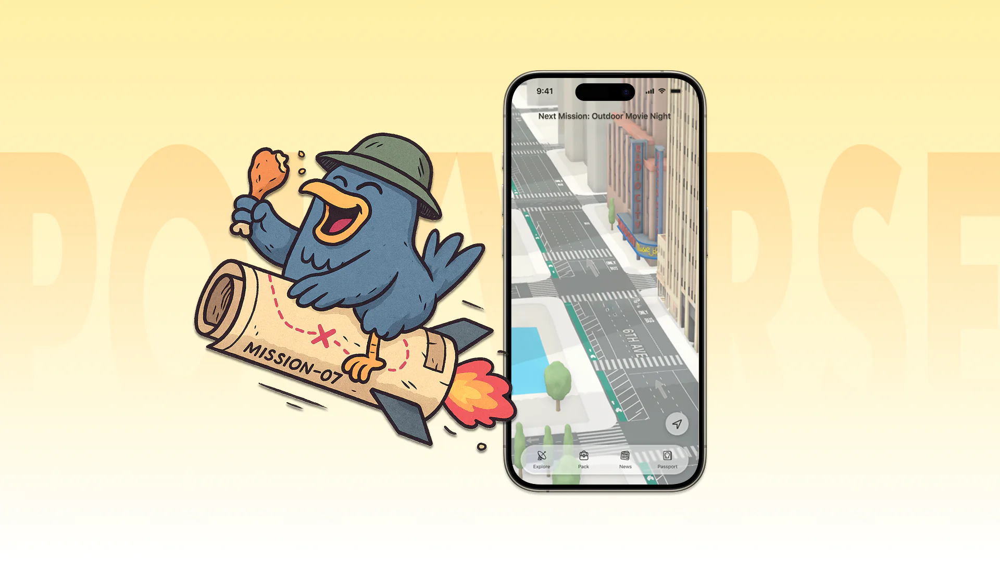
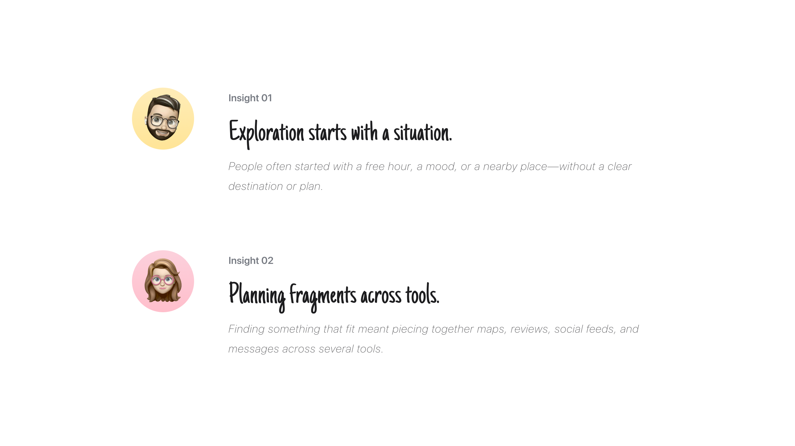
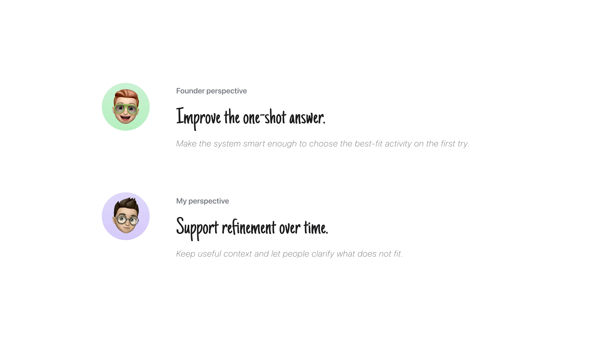
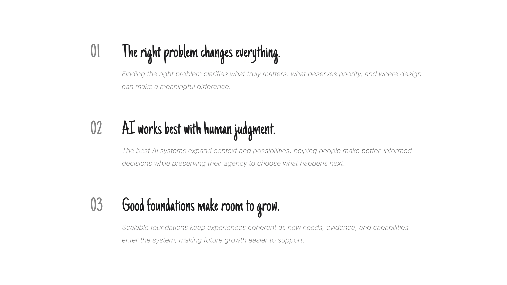

Polyverse
Polyverse is an AI-powered city exploration platform that helps people turn a vague desire to go out into an actionable plan.
- Role
- Lead Product Designer
- Scope
- End-to-End Exploration Platform
- Team
- Founder, Engineering, Marketing, and Community
Background
The opportunity began before a destination existed.
Most city tools begin with a destination and optimize a single task—search, reviews, planning, or booking. Polyverse started earlier, before the user knew where they wanted to go.
Without a defined destination, people had to assemble an answer across multiple tools. The first challenge was not choosing among options, but figuring out what was possible in the first place.
The competitive landscape covered individual tasks, but left the path from inspiration to action fragmented.
Research
Exploration began before a plan existed.
I studied how people started exploring, compared possibilities, and moved toward a decision.

The survey and research synthesis helped shift the question from finding places to making decisions.
Product direction
Turn open-ended intent into action.
The direction became a connected journey that could carry open-ended intent into a clearer next step, without forcing people to begin with a predefined destination.
Principle 01
Make vague intent actionable.
People should not need to formulate the perfect search before they can begin.
Principle 02
Connect planning into one journey.
Discovery, evaluation, and action should keep the same context instead of resetting across apps.
The first exploration model
The first complete model connected discovery, evaluation, and action in one flow. It created a clear baseline for testing what helped people move forward.
Decision 01
From relevance to actionability.
Once the first model connected discovery and planning, testing revealed that filtered results still felt too generic for the moment. Participants could narrow the field, but did not always know which signals mattered when they began with loose context, such as having some time nearby.
Relevance was not the same as actionability.
I reframed the question from “Is this relevant?” to “Is this something I can realistically do right now?”
Decision 02
Design beyond the first answer.
After the first recommendation was generated, testing surfaced a different limitation: when the result felt close but not right, people had no way to build on what they had already explored. They had to restate their needs and begin a new search, even though parts of the original context remained useful.

Ask the model to infer more and make the first recommendation complete.
Let people keep what works, react to what does not, and update the result without losing progress.
Make room for refinement.
Every recommendation became the starting point for the next conversation, so people could keep what worked and adjust what did not.
Final experience
A city experience that adapts to the moment.
The final product brings discovery, contextual guidance, and progressive refinement into one connected experience. It helps people move from open-ended intent to an actionable plan while keeping control of the decision.
A connected journey from intent to action.
Discovery, evaluation, and action work together in one continuous flow. People can start with a vague idea, explore what fits, refine the path as their needs change, and move forward without restarting.
AI Companion: Inspired by New York pigeons, Figo acts like a local scout—familiar with the city and always on the lookout—helping people discover what fits their moment.
Design System: I built the foundations and reusable UI layer so color, typography, components, states, and interaction patterns could remain consistent as the product evolved.
Impact
Progress showed up in behavior.
After refinement, more people were able to turn an initial idea into a clear next step, with fewer restarts and more confidence in the decision.
Reflection
Beyond the product.
The work surfaced a broader way of designing through uncertainty, where the problem, human judgment, and the system evolve together.
